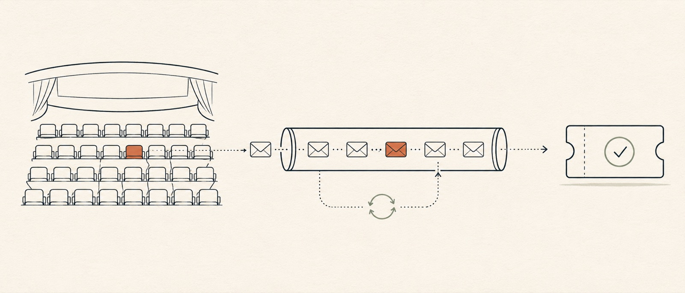
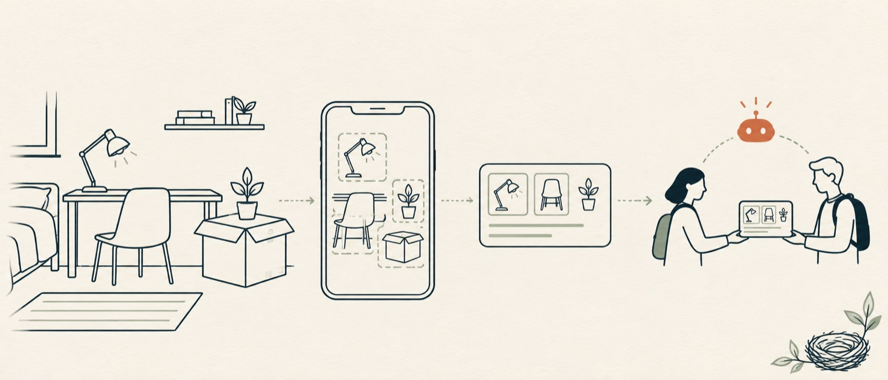

Divya S Rajput · Los Angeles · Open to Software, Full-Stack & AI roles
I ship the whole stack and prove it works.
From React front ends to exactly once Kafka backends to 25 ms vision models,
I build products end to end and test them like they're already in production.
MS Computer Science, University of Southern California.
Hi, I'm Divya. I like building things that make it all the way
into people's hands.
I did my Master's in Computer Science at the University of Southern California,
and I work across the whole stack from the interface someone taps, to the services behind it,
to the models that make it smart. I'm happiest in the space where design, engineering, and
machine learning meet, and I care about the small details that separate something that just
demos well from something people can actually rely on.
Right now I'm a Research Engineer at USC iLab, building the real-time
perception stack for smart glasses that help blind and low-vision people navigate
independently: object detection and instance segmentation running at 25 ms on-device,
inside a SLAM-based navigation loop. Hard, technical, and pointed at something that genuinely
matters: exactly the kind of problem I love.
Before this, I built a Next.js and Contentful-powered web application for 20,000+ students
and faculty at USC's Sol Price School, and shipped Angular components and
FastAPI endpoints as a
Software Engineer at Accenture.
I also love the energy of hackathons the challenge of building ambitious ideas from scratch. During my master's at USC, I won multiple competitions. Along the way, my work has been recognized with a Best Master's Poster award from Google and PsychArmor, as well as wins at ACM Trojan Hacks and HackSC.
Developed a real-time object-detection and instance-segmentation pipeline for smart glasses that help blind and low-vision users navigate, reaching 25 ms inference latency at 30 FPS on-device.
Hit that latency budget by profiling and optimizing the model and runtime for a SLAM-based navigation loop.
Computer vision · Instance segmentation · Model optimization · SLAM
Aug 2025 — May 2026
Front-End Developer
USC Sol Price School of Public Policy
Engineered a web application with Next.js, React, TypeScript, and Tailwind CSS, integrating Contentful's headless CMS and an API-driven content architecture to support 20K+ students and faculty.
Implemented GraphQL API integrations and optimized WordPress themes; built a reusable component system documented in Storybook and automated CI/CD workflows with GitHub Actions.
Developed and maintained 15+ features and 10 reusable Angular components in TypeScript, and built 6+ FastAPI REST endpoints on Amazon RDS with validation, retries, and structured error handling for reliable third-party data exchange.
Triaged, debugged, and resolved production defects across the front end and back end in Agile sprints, reducing manual reconciliation work by 5 hours per week.
An event-driven booking platform where zero oversells is a test result, not a promise.

Problem
Booking systems fail in the worst possible way: two people buy the same seat under
concurrent load, and duplicate events under retries corrupt state. Correctness claims
mean nothing unless they survive race conditions, broker outages, and deliberate chaos.
Approach
Six event-driven microservices in Java 21 and Spring Boot on Kafka, Redis, and PostgreSQL,
with an Angular front end. Zero double-bookings come from layering atomic Redis holds over
JPA optimistic locking, so the durable tier stays authoritative; a 60-thread race test
asserts exactly 10 bookings for 10 contested seats and zero 5xx responses.
Events are delivered through a transactional outbox, idempotent consumers, and dead-letter
topics, so bookings still confirm in about 70 ms with Kafka fully down. Every merge is
gated on Pact contracts at each service boundary, a 250-test Toxiproxy chaos suite, ArchUnit
rules, JaCoCo ratchets, and 96% PIT mutation-test strength on the booking service.
Redis holds fence the race; the transactional outbox keeps PostgreSQL and Kafka in agreement, so replays are safe by construction.
Case study · Sep 2024 — Jun 2025
ReNest
A full-stack marketplace whose agentic AI turns a room photo into a ready-to-post listing, giving dorm goods a second life between students instead of the landfill.

Problem
Campus marketplaces need trust mechanics: reservations, verified handoffs, honest
listings, and payments that can't be gamed. And any AI feature has to stay useful when
the model provider rate-limits, times out, or returns nonsense.
Approach
A marketplace spanning 135 REST endpoints and 36 React pages on Django REST, PostgreSQL,
and Celery/Redis: listings, reservations, PIN-verified pickup handoffs, donation hubs,
multi-campus analytics, and AI room scans that turn a photo into a publishable listing.
A tool-using Gemini concierge streams over SSE with semantic request routing,
embedding-based response caching, and a Plan–Execute–Reflect agent loop; circuit
breakers, quota-aware model fallbacks, and a 22-case golden-set eval suite keep it
degrading gracefully when the provider doesn't.
A Risk Intelligence layer adds an explainable 17-rule payment risk engine, idempotent
APIs, an event log with retries and dead-lettering, and a Fraud Lab that measures
precision and recall. Everything ships behind CI with backend, frontend, e2e, and load
tests at 0% errors.
Circuit breakers route around provider failures; the golden-set eval suite keeps answers honest.
Case study · Aug 2026
CareMesh
A safety-first LLM companion for a youth mental-health platform, where the crisis path is enforced in code and retrieval quality is a number checked in CI.
Problem
An LLM companion in a mental-health setting can't be trusted to a prompt. A crisis
message must never trigger a tool call, every tool must stay inside its tenant, side
effects must survive retries, and answers must cite what they were retrieved from. All of
that has to be measured, not assumed.
Approach
A tool-calling companion on FastAPI with SSE streaming, allow-listed and tenant-scoped
tools, and idempotent side effects. Crisis-classified messages route to a tool-less
response path enforced in code rather than the prompt, and an agent-behavior eval suite
asserts zero tool invocations on crisis inputs.
Underneath sits a multi-tenant retrieval pipeline: approximate nearest-neighbor search
over a pgvector HNSW index, hybrid vector-plus-keyword ranking, and cited answers. Adding
bge-small ONNX dense embeddings to the keyword ranker raised retrieval hit@1 from 0.5 to
1.0, measured by a 23-case retrieval eval harness gated in CI.
Message→Crisis classifierenforced in code, not the prompt→Tool-calling companion · pgvector RAGCrisis path · zero tools
The crisis route bypasses tools entirely; the agent-behavior eval suite asserts zero tool calls on crisis inputs.
Building the perception stack for smart glasses that help blind and low-vision users navigate
independently. The object-detection and instance-segmentation pipeline runs at 25 ms
inference and 30 FPS on-device, reached by profiling and optimizing the model and runtime for
a SLAM-based navigation loop.
Object detection · Instance segmentation · SLAM · On-device inference
Best Master's Poster · ShowCAIS 2025
VisionMate: Assistive Vision Research
Enhanced VisionMate research presented at ShowCAIS 2025, recognized with the Best Master's
Student Poster Presentation award by Google and PsychArmor — selected as the top poster among
all master's student entries.
Assistive technology · Computer vision · Applied research
Publications
First author · CIPR 2022 · Springer
Detection and Classification of Dental Caries Using Deep and Transfer Learning
Proceedings of the 3rd International Conference on Recent Trends in Machine Learning, IoT, Smart Cities and Applications · Lecture Notes in Networks and Systems · pp. 667–675